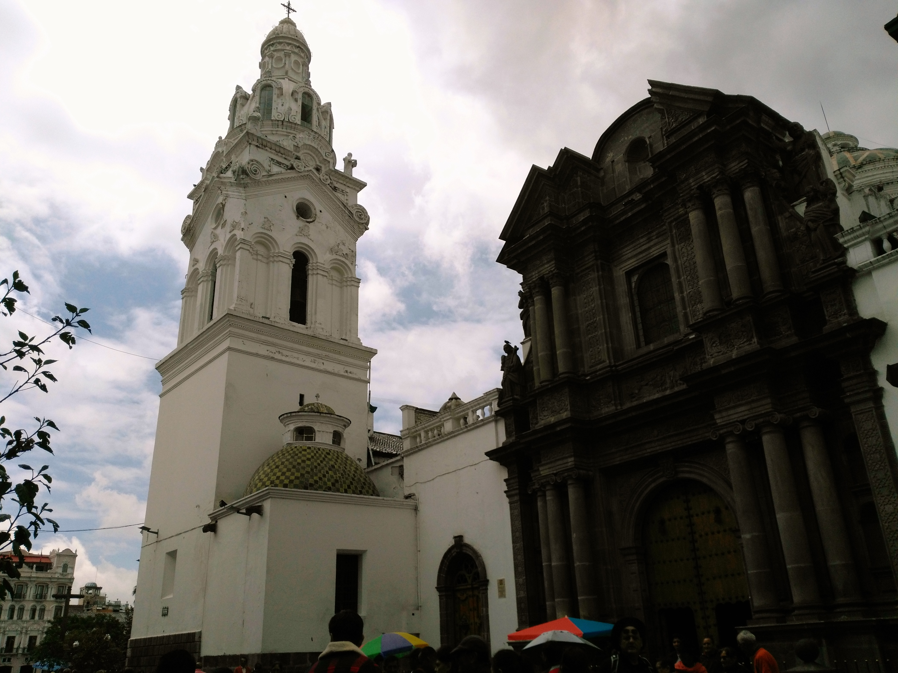
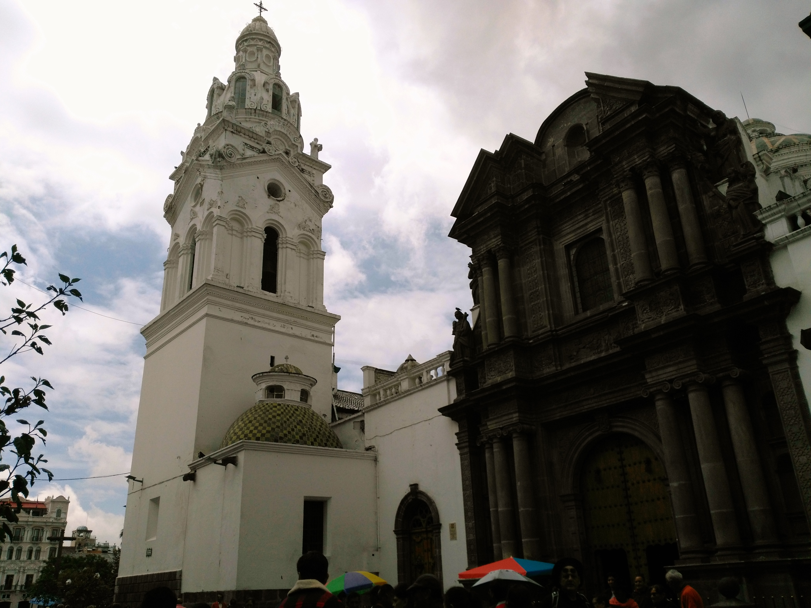
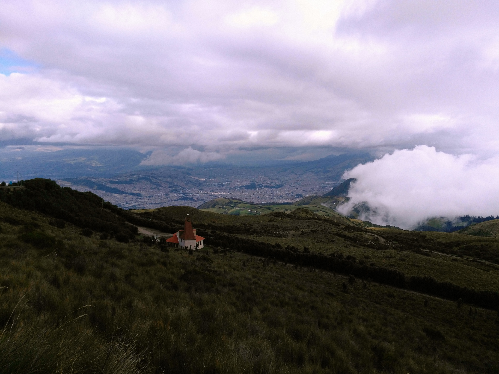
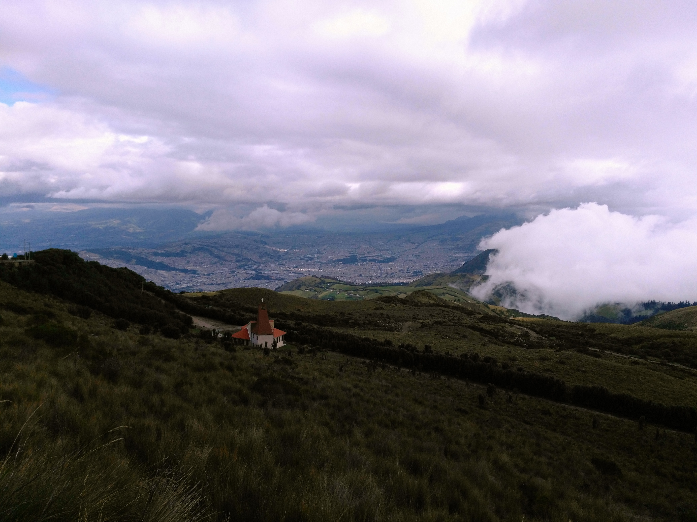

Quito et Otavalo
Une capitale bien tranquille
Quito
Après le petit délire nature des précédents, nous voilà arrivés à Quito, la capitale.
Premier jour : Tour de la ville et basilique
Pour ce premier jour, on décide d'aller visiter la ville un peu au gré de nos envies. On récupère donc un plan avec un itinéraire conseillé et Maïlys se lance dans un guidage libre. On commence donc par un petit tour du marché (notre hôtel est juste à côté) où l'on peut généralement manger très économique. On essaye la spécialité du coin à base de poisson, très bon on est conquis. On fait ensuite le tour de quelques attractions de la ville dont la plus impressionnante est la basilique. On apprendra par la suite que l'architecte a voulu faire un mixte de la cathédrale Notre-Dame à Paris (cocorico ! et R.I.P) et la cathédrale St Patrick de New-York (hamburger ! vive les clichés). Très belle et très impressionnante. Elle a été commandée par un président très pieu (qui a mal fini il me semble, après avoir essayé de faire passer une loi rendant le culte catholique obligatoire) et il l'a voulu visible depuis tout Quito.
Par ailleurs Quito nous est apparu très mignonne et très calme, très paisible malgré sa taille et son statut de capitale. De bonnes premières impressions donc !
Deuxième jour : Free walking tour et téléphérique avec Vincianne
Deuxième journée dans la capitale, on décide de faire un «free walking tour» (vous connaissez le principe maintenant). On apprend donc tout un tas d'anecdotes sur le quartier historique que je serais bien incapable de vous retransmettre. Venez à Quito et on en parle.
Un petit mot quand même sur l'histoire du pays. Durant les années 90 le pays connait une période instable politiquement avec une forte inflation. Régulièrement les gouvernements sont «virés» avant la fin de leur mandat. Et fait remarquable, l'armée qui assure l'intermitence n'a jamais essayé de s'installer au pouvoir, une exception ! Globalement le peuple n'est pas content. Pour sortir de la crise, un président économiste propose de passer la monnaie au dollar américain afin de stabiliser la dette. Donc un vendredi, les comptes de tout un chacun sont gelés, et seront débloqués le lundi en ayant été convertis en dollar. Enfin ça c'est en théorie. Parce que pendant le week-end ces chers banquiers s'en sont allés avec les économies de tout le pays à l'étranger. Beaucoup de gens ont littéralement perdu tout une vie d'économie. Je n'ose imaginer le désarroi de ces gens-là. Toujours est-il que suite à ça, le pays a connu une relative stabilité économique et politique et est maintenant considéré comme un des pays les plus stables et sûrs du continent.
On fait également la rencontre de Vincianne, en voyage «long» comme nous, quelques mois il me semble. Une parisienne vivant sur une péniche qui a plein d'anecdotes à raconter. Du coup on décide d'aller ensemble prendre le téléphérique pour un point de vue soit-disant immanquable sur la ville. Surtout c'est un des rares jours où on ne l'a pas vue dans les nuages, donc on en profite. Et effectivement le téléphérique nous monte vers 4000m d'altitude d'où on surplombe toute la vallée. C'est même ici le point de départ de plusieurs rando dans un paysage très vert où on oublie bien vite la ville. Bref moment sympa.
On retrouvera même Vincianne pour un petit restaurant dans le quartier de la Ronda. Soi-disant un ancien quartier craignos qui a été réhabilité et est maintenant un lieu idéal pour sortir le soir, très animé. Je ne vous cache pas qu'on a été déçus, on a trouvé que c'était un peu artificiel et pour les touristes. Peut-être qu'on est pas sortis le meilleur jour.
Troisième jour : Mitad del Mundo
Aujourd'hui c'est Mitad del Mundo. Pour les non hispanophone un peu flemmard, ça se traduit par «Moitié du Monde», l'équateur quoi. Hey ! L'équateur en Équateur ! Hasard ? Coïncidence ?
Bon trêve de plaisanterie, c'est ici qu'on a dressé un monument dédié à l'équateur et aux géographes qui ont déterminé sa position (plus ou moins) exacte. C'est maintenant tout un parc avec diverses animations et expositions qui parlent des différents aspects de l'Équateur (historique, artistique, scientifique). Il y a entre autre une reconstitution des différentes habitations traditionnelles indigènes, un topos sur les expéditions qui calculèrent la position de l'équateur (les français en tête, cocorico encore !) et notamment sur Guayasamin, un artiste extrêmement connu et populaire, équatorien donc. Cela nous plaira suffisamment pour qu'on décide d'aller voir le musée qui lui est dédié le lendemain matin, avant de partir pour Otavalo.
Plus anecdotique il y a aussi une explication sur la fabrication de la bière (?!), du chocolat et quelques autres sujets. Bref il y a de quoi faire une fois sur le site, mais tout n'est pas indispensable.
Pour la fin de la journée on se repose, petit temps calme à l'hôtel. On en a besoin aussi, n'en déplaise à ceux qui pensent que nous sommes en vacances.
Quatrième jour : Musée Guayasamin + départ pour Otavalo
Du coup, comme je le disais, nous sommes allés au musée dédié à Guayasamin. Alors nous on ne le connaissait pas avant, mais c'est en fait un artiste qui a connu le succès de son vivant. C'est un des peintres les plus importants d'Amérique du Sud et même de sa génération. Il y a sur ce site donc son ancienne maison, avec sa collection personnelle (et très bien fournie, déjà parce que c'était un collectionneur et aussi parce qu'il a échangé beaucoup d'oeuvres avec d'autres très grands artistes) et la Capilla del Hombre qui était son dernier projet de musée. Il est mort sans avoir pu entièrement tout finir, malheureusement.
Je ne ferais pas l'affront de vous décrire son travail ici. C'est un homme qui a beaucoup voyagé dans son continent à une époque où les dictatures étaient malheureusement nombreuses. Il a beaucoup peint le malheur des hommes et des femmes qu'il a vu. Ses peintures sont donc très sombres et dures. Il a eu une période un peu plus heureuse à la fin de sa vie mais a toujours été très sensibles aux malheurs des gens.
On sort ravis de cette petite visite, et maintenant direction le bus pour partir vers Otavalo, notre dernier arrêt équatorien.
Otavalo
Marché
Otavalo est essentiellement connu pour son marché d'artisanat, le plus grand d'Amérique du Sud. Et croyez-moi il est grand. Le week-end c'est quasiment tout le village qui se transforme en marché, de la place centrale aux rues adjacentes, remplies d'artisanat de toute sorte (bijoux, chapeaux, habits, hamacs, etc). On trouve de tout, pour tous les goûts. Ça foisonne de gens, de touristes autant que de locaux. On croisera plusieurs groupes de français, dont un couple avec lequel on sympathisera et avec qui on ira casser la croûte.
On reste une nuit supplémentaire à Otavalo pour se reposer avant un passage de frontière avec la Colombie qu'on nous annonce pas si simple (notamment à cause de la crise du Venezuela).
Départ pour la frontière colombienne
Le lendemain on part donc vers le nord pour passer en Colombie. À un terminal de bus, Maïlys se fait voler son portable. Mauvaise expérience. On arrive donc à la frontière un peu secoué par cette mésaventure, et je commence à ne pas me sentir très bien. On devra pourtant attendre 1h30 au poste frontière colombien pour rentrer dans le pays. Rien de méchant, mais c'est le passage de frontière le plus long qu'on ai fait. Après ça on décide de ne pas avancer plus, me sentant vraiment malade. On prend donc une nuit à Ipiales avant de partir pour Popayan. Il me faudra bien ça pour me requinquer.
Au revoir Équateur, sacré petit bout de pays, et bonjour Colombie dont on nous a tant parlé !


 


 

 <\div>
<\div>